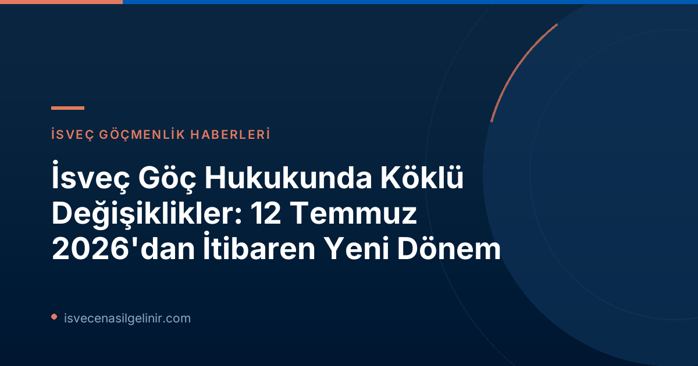

İsveç Göç Hukukunda Büyük Değişiklikler: 12 Temmuz'dan İtibaren Neler Yürürlüğe Giriyor?
İsveç hükümeti, 2025/26:262 sayılı önergesiyle ("Proposition om utmönstring av permanent uppehållstillstånd och anpassning av svensk rätt till EU:s migrations- och asylpakt") önemli yasal düzenlemeleri hayata geçiriyor. 12 Temmuz 2026 tarihi itibarıyla yürürlüğe girecek bu değişiklikler, hem İsveç hukukunun AB Göç ve İltica Paktı'na uyumunu sağlamakta hem de iltica ile ilişkili daimi oturum izinlerinin (PUT) kaldırılmasını öngörmektedir. Bu kapsamlı uyum süreci, İsveç'in göç ve iltica politikalarında yeni bir dönemi başlatıyor.AB Göç ve İltica Paktı'na Uyum ve Tarama Süreci
AB Göç ve İltica Paktı çerçevesinde, İsveç'te yeni bir tarama (screening) süreci başlatılıyor. Bu süreç, ülkeye gelen iltica başvuru sahipleri için standartlaştırılmış kontroller getirmektedir.Tarama Sürecinde Yetki ve İş Birliği
Yürürlüğe giren yeni düzenlemelerle birlikte, tarama sürecinin ana sorumlusu Polismyndigheten (Polis Kurumu) olarak belirlenmiştir. Ancak Migrationsverket (Göçmen Dairesi) de tarama yetkisine sahip bir kurum olarak atanmıştır. Bu iki kurum, tarama sürecinin pratikte nasıl yürütüleceğini, sorumlulukların nasıl paylaşılacağını ve sürecin takibini düzenleyen ortak bir mutabakat anlaşması imzalamıştır. Migrationsverket Genel Müdürü Maria Mindhammar'ın ifadesiyle, ortak sorumluluk alanlarında pratik uygulama konusunda tam bir anlaşma sağlanmıştır.Tarama Hangi Kontrolleri İçeriyor?
Tarama süreci, başvuru sahiplerinin İsveç'e girişiyle birlikte gerçekleştirilen çeşitli kontrolleri kapsamaktadır. Bu kontroller şunlardır:- **Kimlik Kontrolü:** Başvuru sahibinin kimliğinin tespiti.
- **Güvenlik Kontrolü:** Ülke güvenliği açısından herhangi bir riskin belirlenmesi.
- **Hassasiyet Kontrolü:** Başvuru sahibinin özel ihtiyaçlarının veya kırılganlığının tespiti.
- **Basit Sağlık Kontrolü:** İsveç'in ilgili bölgeleri tarafından yürütülen temel bir sağlık incelemesi.
İsveç Tarama (Screening) Sürecinin Detayları
- **Yetkili Kurumlar:** Polismyndigheten (Polis Kurumu) ve Migrationsverket (Göçmen Dairesi)
- **Başlangıç Tarihi:** 12 Temmuz 2026
- **İş Birliği:** İki kurum arasında imzalanan ortak mutabakat ile yetki ve sorumluluklar belirlenmiştir.
- **Kapsanan Kontroller:**
- Kimlik Kontrolü
- Güvenlik Kontrolü
- Hassasiyet (Vulnerability) Kontrolü
- Basit Sağlık Kontrolü (İsveç'in bölgeleri tarafından sorumludur)
- **Uygulama Merkezleri:** Boden, Märsta/Arlanda, Mölndal, Malmö (Göçmen Dairesi'nin Polis Kurumu ile tesisleri paylaştığı yerler)
Tarama Sürecinin Uygulanacağı Merkezler
Tarama süreci, Migrationsverket'in Polismyndigheten ile ortak tesisleri paylaştığı dört merkezde başlayacaktır:- Boden
- Märsta/Arlanda
- Mölndal
- Malmö
İltica Başvurularında Ücretsiz Hukuki Destek Hakkı Değişiyor
12 Temmuz'dan itibaren iltica başvuru sahiplerinin ücretsiz hukuki danışmanlık ve avukatlık hizmetlerine erişim hakları da önemli ölçüde değişmektedir. Bu değişiklikler, AB'nin asgari hukuki standartlarına uyum amacıyla yapılmıştır.Yeni Düzenlemeler Neler Getiriyor?
Daha önceki uygulamada, İsveç'te koruma (iltica) başvurusunda bulunan bir kişi, başvuruyu yaptığı andan itibaren ücretsiz bir kamu avukatı (offentligt biträde) hakkına sahip olabiliyordu. Yeni düzenleme ile bu haklar şu şekilde sınırlandırılmıştır:| Konu | Eski Durum (12 Temmuz 2026 Öncesi) | Yeni Durum (12 Temmuz 2026 Sonrası) |
|---|---|---|
| **Ücretsiz Hukuki Danışmanlık** | İltica başvurusu yapıldığı andan itibaren ücretsiz avukat (kamu avukatı) hakkı olabilirdi. | Başvuru sürecinin başında **2 saate kadar** ücretsiz hukuki danışmanlık hakkı. |
| **Ücretsiz Kamu Avukatı (Offentligt Biträde)** | Başvurunun sunulmasından itibaren hak kazanılabilirdi. | Sadece Göçmen Dairesi'nin kararına **itiraz edilmesi durumunda** ücretsiz kamu avukatı hakkı. |
| **Yasal Dayanak** | Önceki ulusal düzenlemeler. | AB'nin asgari hukuki standartlarına uyum. |
İlticayla İlişkili Daimi Oturum İzinleri (PUT) Kaldırılıyor
İsveç göç hukukundaki en önemli değişikliklerden biri de ilticayla ilişkili daimi oturum izni (Permanent Uppehållstillstånd - PUT) imkanının tamamen kaldırılmasıdır.Kimler Etkileniyor?
Bu düzenleme, İsveç'te iltica başvurusu yapan ve geçici oturum izni alan kişilerin daimi oturum izni alma imkanını tamamen ortadan kaldırmaktadır. Bu değişiklik, İsveç'in mevzuatını AB'nin minimum standartlarına uyarlaması amacıyla yapılmıştır. Daha önce daimi oturum izni başvurusu yapmış ve geçici oturum izni almış kişiler için Göçmen Dairesi, sadece uzatılmış oturum izni koşullarını karşılayıp karşılamadıklarını inceleyecektir. **ÖNEMLİ:** Bu değişiklik, halihazırda daimi oturum izni sahibi olan kişileri etkilemeyecektir. Ancak gelecekte İsveç Vatandaşlık Testi için başvurmayı düşünen ve henüz daimi oturum izni olmayan iltica kökenli bireylerin bu yeni düzenlemeleri göz önünde bulundurması gerekmektedir. Uzun vadeli ikamet ve vatandaşlık planları olan herkesin, bu köklü değişikliklerin kişisel durumlarını nasıl etkileyeceğini anlamak için güncel yasalara hakim olması önemlidir.Özet ve Gelecek Beklentileri
12 Temmuz 2026 tarihinde yürürlüğe girecek olan bu yasal değişiklikler, İsveç'in göç ve iltica sisteminde önemli bir evrimi temsil etmektedir. AB paktına uyum, tarama süreçlerinin başlaması, hukuki yardım haklarındaki sınırlamalar ve daimi oturum izni uygulamasının kaldırılması, ülkeye gelmek isteyen veya halihazırda iltica sürecinde olan herkes için kritik öneme sahiptir. Bu yeni dönemde, güncel bilgilere erişmek ve yasalara uygun hareket etmek her zamankinden daha da önemli hale gelmiştir. İsveç'e dair göçmenlik ve vatandaşlık konularında en güncel ve doğru bilgilere ulaşmak için sitemizi takip etmeye devam edin.Referanslar:
- Migrationsverket Resmi Duyurusu: Flera lagändringar inom migrationsområdet från 12 juli
İsveç'te Oturum İzni ve Vatandaşlık Süreçleri Hakkında Daha Fazla Bilgi İçin
İsveç'e yerleşme, oturum izni başvuruları ve vatandaşlık süreçleri hakkında güncel ve doğru bilgilere ulaşmak, bu yeni düzenlemelerin sizi nasıl etkilediğini öğrenmek ve gelecek adımlarınızı planlamak için sitemizi ziyaret edin.